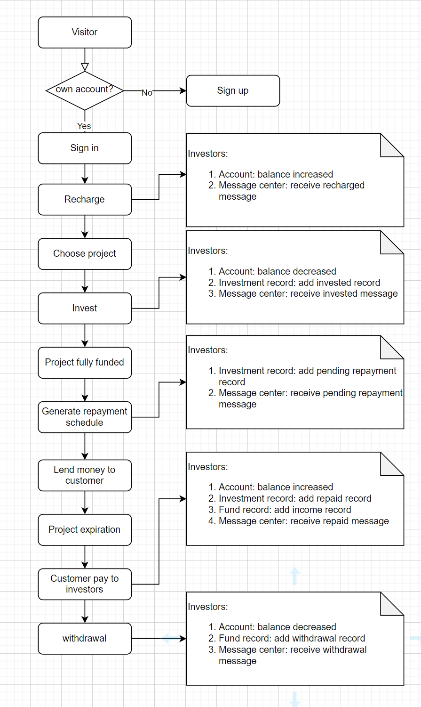

Personal Finance and Business
Lending Website
Main features

This is the account details page, displaying investor's asset composition and expected returns.
View more features ...
Project Overview
In this project, I played a significant role as one of the primary software developers in the development of a financial platform catering to individuals and businesses. The platform aimed to provide a secure and efficient online environment for lending and investment activities.
Flow chart:

Role and Responsibilities
- Designed and implemented core platform features, including user authentication, recharge, withdrawal, loan applications, and investment opportunity showcasing.
- Engaged in both front-end and back-end development, contributing to user-friendly interfaces and robust data processing.
- Addressed challenges related to data security and privacy, ensuring the appropriate protection of user information.
- Collaborated with cross-functional teams, including product managers, designers, and testing engineers, to ensure timely project delivery.
Technologies and Tools Used
Throughout the project, I utilized various technologies and tools, including but not limited to:- Front-end: HTML, CSS, JavaScript, jquery
- Back-end: PHP, ThinkPHP framework,Phalcon framework, MySQL, MongoDB, Redis, RabbitMq
- Version Control: Git
- Security: Encryption techniques, authentication and authorization methods
Project Challenges and Solutions
- Challenge: We encountered challenges related to data privacy and security, particularly when handling personal and financial information of users.
- Solution: To address this, we implemented robust encryption techniques and authorization processes to safeguard user data.The communication between browsers and servers is encrypted using SSL/TLS.Core business interfaces such as registration, deposit, investment, and withdrawal utilize encryption algorithms like SHA, AES, RSA, etc., for secure data transmission.
- Challenge: A large number of users simultaneously accessing and trading can lead to server performance bottlenecks and response delays.
- Solution: Implement a distributed architecture, utilize load balancing techniques, cache popular data(using memached, redis), and implement horizontal scaling to handle high concurrency.
- Challenge: Ensuring the consistency of transaction and account data across multiple data sources and systems is a challenge.
- Solution: Implement a distributed transaction mechanism, use a message queue to ensure the consistency of data between multiple systems, and regular data synchronization between multiple data sources.
Project Goals and Achievements
- The primary objective of the project was to establish a secure and efficient financial platform, facilitating lending and investment activities between individuals and businesses.
- My work contributed to the realization of essential platform functionalities, enabling users to easily browse investment opportunities, submit loan applications, and conduct transactions.
- Following the successful launch of the platform, there was a substantial increase in user registrations and activity, demonstrating the positive business outcomes resulting from our team's efforts.
Team Collaboration and Communication
- Throughout the project, I collaborated closely with cross-functional teams, discussing requirements with product managers, coordinating interface design with designers, and troubleshooting issues with testing engineers.
- Through ongoing communication and collaboration, we were able to address challenges promptly and ensure the project's progress as planned.
Self-Assessment
Building a financial products, programmers need to have strong technical skills and understand how the financial industry works. This is a good place to solve complex coding problems, create strong software systems, and use new technologies. Working here improved my programming a lot, and I got better at technical things.